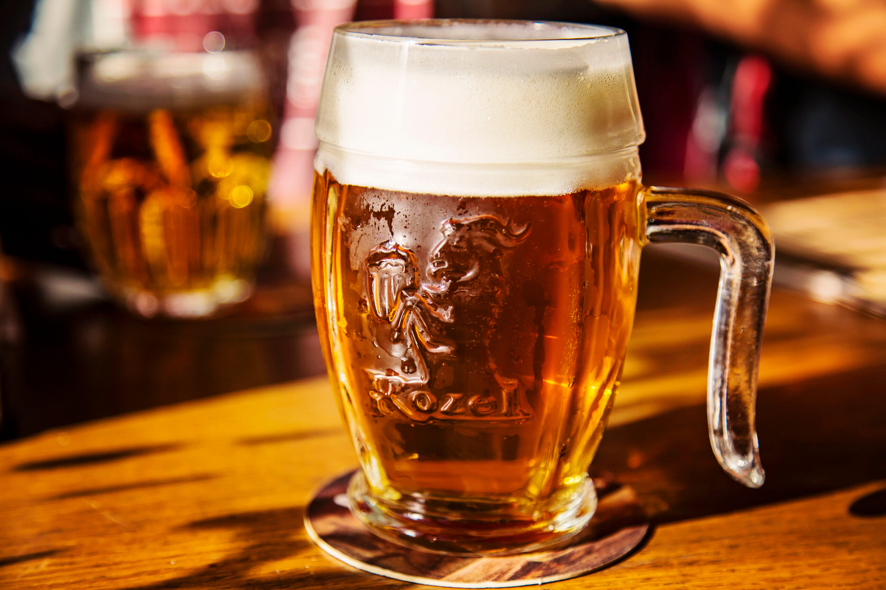
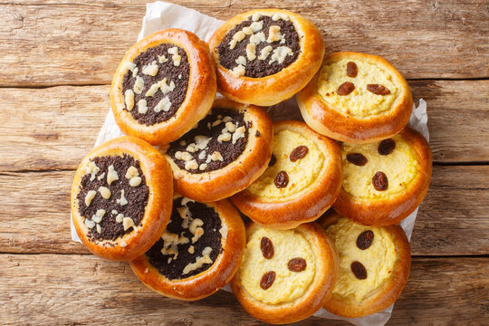
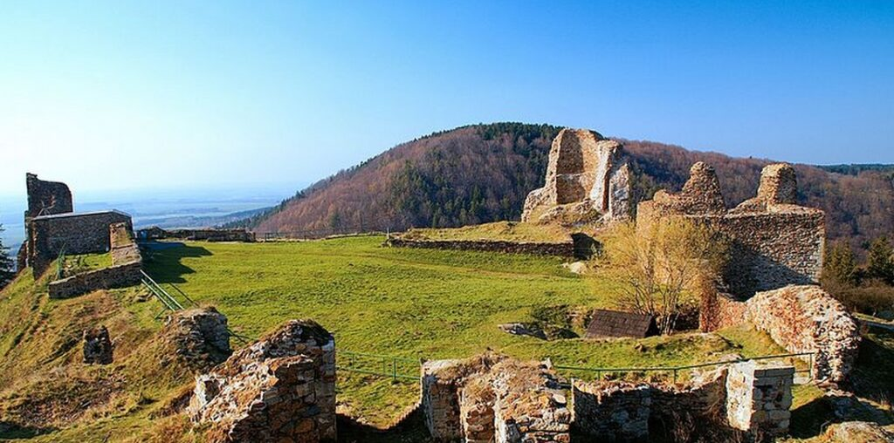
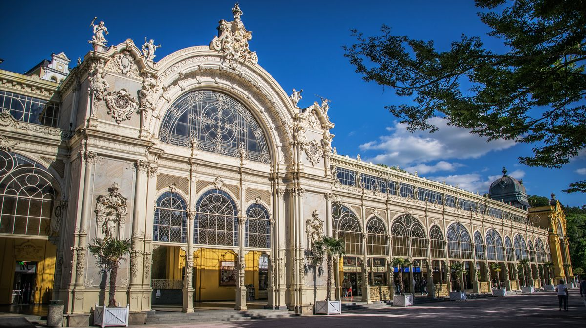
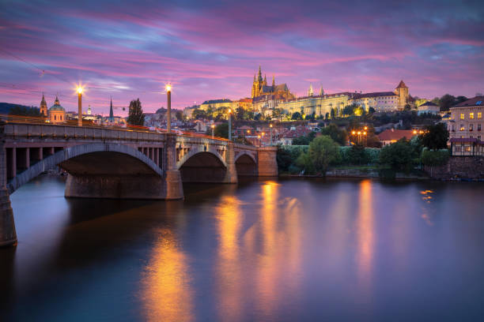
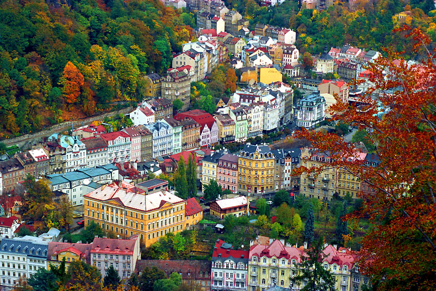
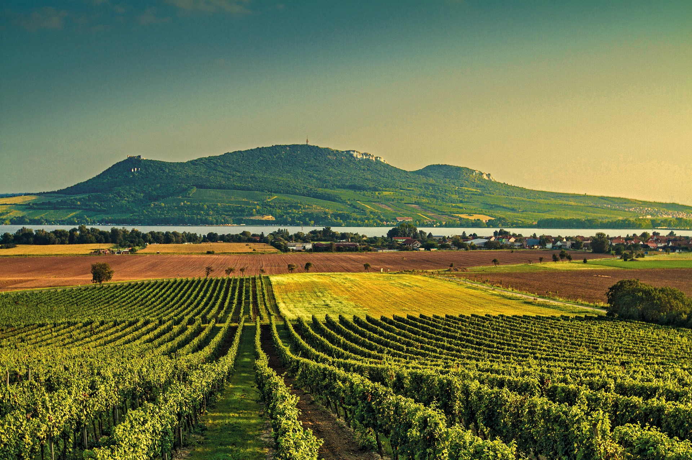

Hlavní chod
Hlavní chod
Svíčková na smetaně
Královna české kuchyně. Hovězí pečeně s bohatou smetanovou omáčkou z kořenové zeleniny a houskovým knedlíkem.

Srdce Evropy
Tisíc let architektury, kultury a příběhů
ukrytých v kamenných uličkách.
O Česku
Česká republika leží v samém středu Evropy a po staletí funguje jako křižovatka kultur, idejí a umění. Gotické katedrály se tu tyčí vedle barokních paláců, a v každém dlážděném dvorku dýchá éra Habsburků i éra avantgardy.
Česká krajina přechází od podkrkonošských hřebenů přes viničná jihomoravská úpatí až ke středočeským rybníkům. Jsou tu světoznámá lázeňská města, UNESCO památky a živá umělecká scéna, která přitahuje cestovatele z celého světa.

Gastronomie
Od poctivých omáček a knedlíků až po světoznámé pivo. Česká kulinářská scéna je bohatá na chutě a tradice.
Hlavní chod
Královna české kuchyně. Hovězí pečeně s bohatou smetanovou omáčkou z kořenové zeleniny a houskovým knedlíkem.

NápojeTekuté zlato. Česká republika je kolébkou ležáku plzeňského typu a má největší spotřebu piva na hlavu na světě.

SladkostiTradiční sladké pečivo z kynutého těsta s různými náplněmi, například makovou, tvarohovou nebo povidlovou. Koláče patří mezi oblíbené součásti české kuchyně a tradičních slavností.
„Praha nikdy nepouští — ani toho, kdo přišel,
— Franz Kafka
ani toho, kdo odešel."
Galerie







Přijeď to zažít
Žádná fotka to nedokáže. Ani ta nejlepší.
Vůně starých uliček, chlad kamenných katedrál,
výhled z hradeb při západu slunce —
tohle musíš prostě sám vidět.